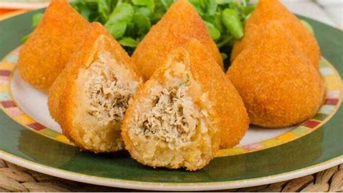
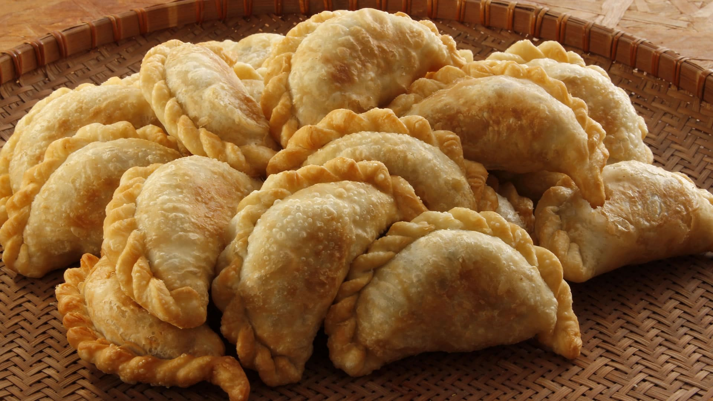

A salada é uma preparação culinária que consiste em uma mistura de vegetais, frutas, grãos e outros ingredientes. Acredita-se que a salada tenha surgido na Pérsia antiga, por volta do século VI a.C., como uma mistura de alface, pepino e cebola com vinagre e óleo. No Império Romano, a salada era consumida como um prato de entrada para estimular o apetite. No século XVIII, a salada se popularizou na França, onde surgiram diversas receitas com ingredientes variados. A salada Caesar, criada no início do século XX, é uma das mais famosas e leva alface romana, croutons, queijo parmesão, molho Caesar e frango grelhado. A salada é uma opção saudável e nutritiva para incluir na dieta, podendo ser consumida como prato principal ou acompanhamento. Atualmente, existem diversas variações de saladas, como a salada de frutas, a salada caprese e a salada grega.

Em 1937, dois irmãos abriam um pequeno drive-in para vender seus hambúrgueres em São Bernardino, na Califórnia, e naquele momento davam os primeiros passos na criação de uma marca que se tornaria famosa mundialmente. Eram Richard e Maurice McDonald. O resto virou história

A coxinha é um salgado tipicamente brasileiro, mas sua origem é incerta.
A receita mais antiga data de 1869 e é de autoria do escritor e cozinheiro brasileiro Luís da Câmara Cascudo.
O nome “coxinha” vem do formato do salgado, que lembra uma coxa de frango.
A massa tradicional do salgado é feita com farinha de trigo, água, sal e manteiga ou margarina.
.jfif "img-pão de queijo")
A história do pão de queijo provoca muita polêmica entre os apaixonados por essa iguaria, mas uma versão mais difundida conta que a receita teria surgido em Minas Gerais, por volta do século 18. Na época, os principais ingredientes da massa — o polvilho e o queijo — eram amplamente consumidos na província, sendo uma combinação ainda mais comum em fazendas de café no interior.

Origem do Pastel A origem do pastel não é totalmente clara, mas muitos historiadores acreditam que ele tenha surgido na China, onde era conhecido como “jiaozi”. Essa iguaria teria sido levada para a Europa pelos exploradores portugueses durante o século XVI. Em Portugal, o pastel recebeu o nome de “pastel de nata” e se tornou muito popular.
O Pastel de Belém O pastel de Belém é uma variação muito popular do pastel de nata em Portugal. Ele é feito com uma receita secreta de uma padaria localizada no bairro de Belém, em Lisboa. A padaria, conhecida como “Pastéis de Belém”, foi fundada em 1837 e continua a atrair turistas do mundo inteiro para provar sua especialidade.
Variações do Pastel O pastel é uma iguaria versátil e pode ser feito com uma variedade de recheios. Algumas das variações mais populares incluem o pastel de carne, pastel de queijo, pastel de camarão, pastel de frango, pastel de palmito, entre outros.
.jfif "img-brigadeiro")
Quando foi criado, o brigadeiro levava leite, ovos, manteiga, açúcar e chocolate! Mas antigamente a dificuldade de encontrar leite fresco no mercado era grande. Por isso, o açúcar, os ovos e o leite foram substituídos pelo leite condensado.